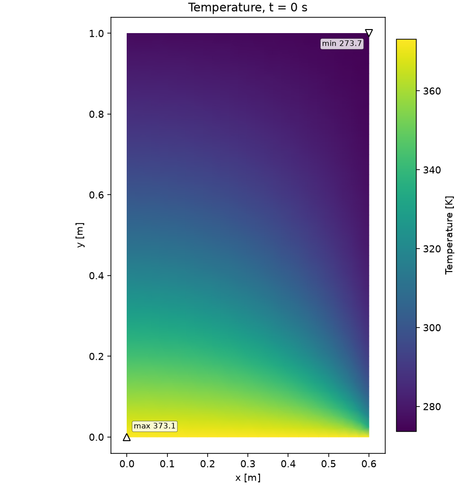
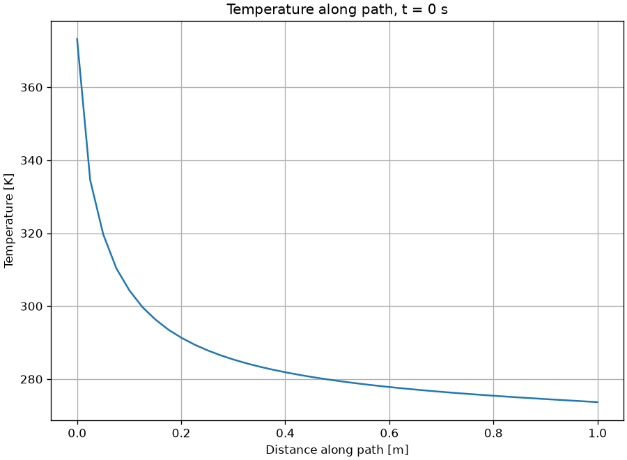
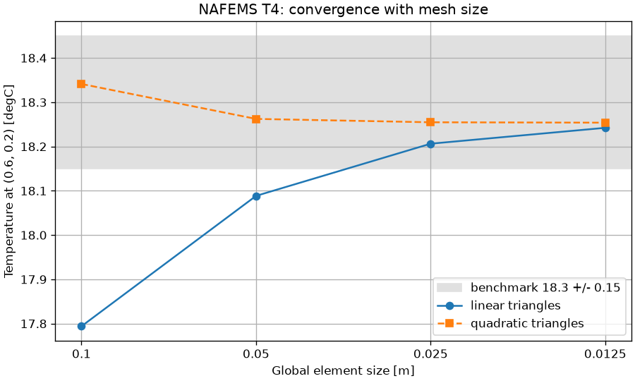
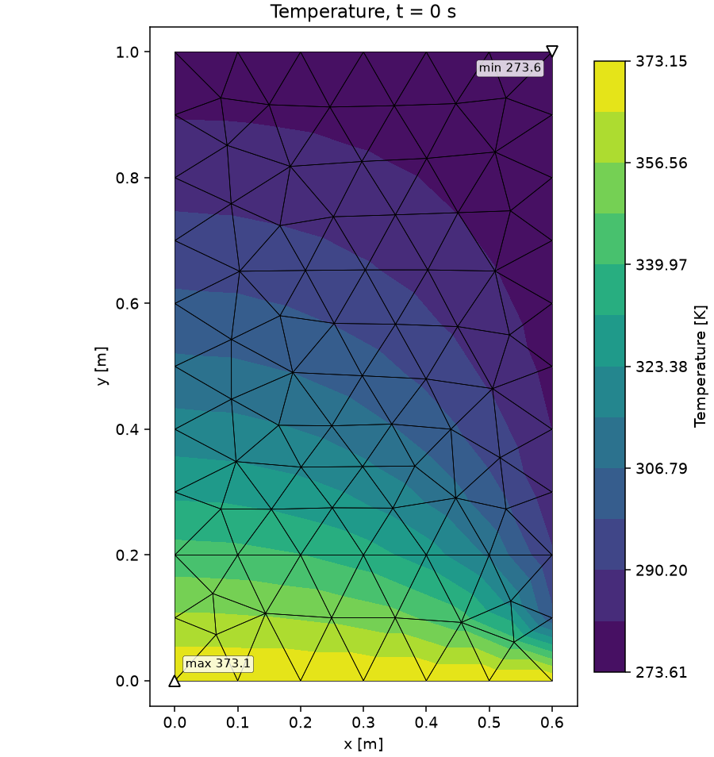

Tutorial 1: NAFEMS T4, a steady plate¶
What you will build. A rectangular plate held at 100 °C on one edge and cooled by convection on two others. It is the NAFEMS "T4" heat-transfer benchmark, and the published answer is a single temperature at a single point.
What you will learn. How to draw the geometry; how to pick edges and faces in the viewport; how to enter a material, boundary conditions and a mesh size; how to solve a steady analysis and read a temperature at a point; how to check the energy balance; and how the answer changes as the mesh is refined.
The finished model is in models/t4-plate.tfea; open it with File > Open... to compare with your own.
The problem¶
A plate of conductivity k = 52 W/(m K) measures 0.6 m in x and 1.0 m in y. Its bottom edge is held at 100 °C. Its left edge is insulated. Its right and top edges lose heat by convection to air at 0 °C. The question is the temperature at the point (0.6, 0.2), on the right edge, 0.2 m above the hot edge.
| Item | Value |
|---|---|
| Plate | 0.6 m (x) by 1.0 m (y), planar model, thickness 1 m (the default) |
| Conductivity k | 52 W/(m K), constant |
| Bottom edge (y = 0) | fixed temperature 100 °C = 373.15 K |
| Left edge (x = 0) | adiabatic (insulated) |
| Right edge (x = 0.6) and top edge (y = 1) | convection, h = 750 W/(m² K), fluid at 0 °C = 273.15 K |
| Benchmark | T(0.6, 0.2) = 18.3 °C, accepted within 0.15 °C at element size 0.025 |
Temperature units. The program works in SI units and shows kelvin by default. This tutorial uses the defaults, so every temperature you type is in kelvin: 100 °C is 373.15 K and 0 °C is 273.15 K. (Tools > Units... can show degrees Celsius instead; the numbers below are given in both.)
A note on the point (0.6, 0.2). The program cannot place a mesh node at a coordinate you type, and you want a node exactly at the benchmark point. So you draw the plate as two stacked rectangles that meet along y = 0.2. A shared edge puts a geometry vertex at (0.6, 0.2), and the mesher always puts a node on a vertex.
Before you start¶
Start the program from the project folder:
.venv\Scripts\python.exe -m thermalfea.gui.app
The window has the model tree (the Model dock, top left), the property panel (the Properties dock, below it), the viewport in the middle, and the Messages dock at the bottom. The solver writes its log to Messages. An Issues dock shares that space as a tab. The toolbar holds the selection modes (None, Point, Curve, Surface, Node, Element) and Fit view.
Three habits save trouble:
- Press Enter after typing a number in a property field. The value is applied when you press Enter or leave the field. Each applied change is one undo step (Edit > Undo).
- A field that holds a physical function (conductivity, temperature, heat-transfer coefficient, ...) has a mode box with Constant, Table and Expression. Leave it on Constant and type the number.
- Edges and faces are chosen from the panel of the object that needs them: press Pick in viewport in the Selection field, choose the matching toolbar mode, click, press Apply, then press Pick in viewport again to switch picking off. Hold Ctrl to add a second item to the selection.
Steps¶
1. Draw the geometry¶
- Choose Geometry > Rectangle.... A dialog titled "Rectangle" opens.
- Type x =
0, y =0, Width =0.6, Height =0.2. Leave "Corner radius" at 0 and "Id" empty (an id is made for you). Press OK. - Choose Geometry > Rectangle... again and type x =
0, y =0.2, Width =0.6, Height =0.8. Press OK. - After each OK the geometry is rebuilt by itself: the status bar shows "Building
geometry..." and then "Geometry rebuilt". The tree node Geometry now lists
rectangle1andrectangle2. - Choose View > Fit view (or press F). The view is fitted only when the first shape appears, so the second rectangle may be partly out of sight until you do this.
You should see a 0.6 by 1.0 plate with a line across it at y = 0.2: two surfaces and seven curves.
2. Enter the material¶
- Right-click Materials and choose Add material. A node "Material 1" appears and its panel opens. A new material starts as a copy of the first library material (aluminium), so every value must be set by you.
- In "Thermal conductivity" (mode Constant) type
52and press Enter. Density and specific heat do not affect a steady answer; leave them.
3. Assign it to the plate¶
- Right-click Regions and choose Add region. A region node appears and its panel ("Region") opens. Its "Material" box already shows "Material 1".
- In the "Selection" field press Pick in viewport, choose Surface in the toolbar, click inside the lower rectangle, Ctrl-click inside the upper one (the status line under the buttons says "2 surface(s) picked"), press Apply, and switch picking off. The new selection is named "Region selection".
- Leave "Thickness" at 1 and "Material angle" at 0.
A region ties a material to some faces and, in a planar model, gives the depth of the plate perpendicular to the drawing. Every heat flow the program reports is for that depth: here, per metre.
4. Enter the boundary conditions¶
There are three. Each is added from the node Loads & Boundary Conditions.
Fixed temperature on the bottom edge.
- Right-click Loads & Boundary Conditions and choose Add > Add Fixed Temperature. A node "Fixed Temperature 1" appears and its panel opens.
- In "Selection" press Pick in viewport. The panel starts in Point mode, because a fixed temperature may also be put on points, so choose Curve in the toolbar. Click the bottom edge of the plate. The status line says "1 curve(s) picked". Press Apply. The field now reads "Fixed Temperature 1 selection". Switch picking off.
- In "Temperature" type
373.15and press Enter (the unit shown is K).
Convection on the right and top edges.
- Right-click Loads & Boundary Conditions and choose Add > Add Convection.
- In "Selection" press Pick in viewport and choose Curve. The right edge is two curves (it is split at y = 0.2). Click the lower right edge, then hold Ctrl and click the upper right edge and the top edge. The status line says "3 curve(s) picked". Press Apply and switch picking off.
- In "Heat-transfer coefficient" type
750and press Enter (W/(m² K)). - In "Fluid temperature" type
273.15and press Enter (K).
Adiabatic on the left edge.
- Right-click Loads & Boundary Conditions and choose Add > Add Adiabatic.
- In "Selection" pick the lower left edge, Ctrl-click the upper left edge ("2 curve(s) picked"), press Apply, and switch picking off.
An adiabatic edge changes nothing: every edge without a condition is already insulated. The condition is there so that the model says what you meant, and so that the edge has a name.
The viewport now draws a symbol for each condition. Click a condition in the tree and its curves are highlighted.
5. Mesh¶
- Click the node Mesh. The panel "Mesh" opens.
- In "Global element size" type
0.025and press Enter. Leave "Element order" at 1 and "Element shape" at tri: linear triangles. - Press Generate mesh (or choose Mesh > Generate mesh). The status bar reports "Mesh generated: 1210 nodes, 2290 elements", and the mesh panel lists the same counts. The mesh is drawn in the viewport.
6. Solve¶
- Choose Solve > Validate. The status bar must say "Validation: no issues". If it lists errors, fix them first; warnings alone do not stop a solve.
- Choose Solve > Solve. A window titled "Solving" shows progress and ends in the state "Finished". It stays open until you close it. A linear steady case takes a moment. (The Analysis Settings node has the same Validate and Solve buttons.)
- A node "Temperature 1" appears under Solution in the tree, and the temperature contour is drawn in the viewport. Click the node to see its panel: "Field", "Levels", "Banded (otherwise smooth)", "Colour scale", "Mesh overlay".
The analysis type was never changed: a new model is steady, which is what this problem is.
7. Read the answer at (0.6, 0.2)¶
- The exact value. Choose File > Export > Nodal results (CSV)... and give a file
name. Open the CSV in a spreadsheet. The columns are
step,time,node,x,y,T,qx,qy, with T in kelvin. Find the row with x = 0.6 and y = 0.2. It reads T = 291.356 K, which is 18.206 °C. - A quick look. Choose Results > Probe, then click in the viewport as close as you can to the right edge at the line y = 0.2. The status bar shows x, y and the temperature. A click lands on a pixel and the point lies on the boundary, so use this only as a rough check. The CSV is the exact one.
- Energy balance. The Messages dock lists the heat entering through each condition. Fixed Temperature 1 gives about +10396 W and Convection 1 about -10396 W (a positive value is heat entering the plate). Below them, "relative imbalance" is the part of the heat flow that the balance fails to account for. Results > Energy balance plots it.
Results¶

The plate is hottest along the bottom edge (373.15 K) and coldest at the top right corner (273.7 K, a little above the fluid at 273.15 K). Heat leaves mainly through the lower part of the right edge, where the plate is hottest and the difference to the fluid is largest. The title says "t = 0 s"; a steady result has no time and the 0 carries no meaning.

| Quantity | Value |
|---|---|
| Mesh | 1210 nodes, 2290 elements (linear triangles, size 0.025) |
| T at (0.6, 0.2) | 291.356 K = 18.206 °C |
| Benchmark | 18.3 °C, tolerance 0.15 °C |
| Difference | 0.094 °C, inside the tolerance |
| Heat entering at the bottom edge | 10 396 W (for 1 m depth) |
| Heat leaving by convection | 10 396 W |
Checking the answer¶
Against the benchmark. The answer is 0.094 °C below 18.3 °C and the tolerance is 0.15 °C, so the benchmark is met.
Energy balance. Every solve checks that the heat in equals the heat out. For a linear steady case the relative imbalance must be below 1e-8. Here it is about 1e-14; the two heat flows above match to every digit shown.
Mesh refinement. Change "Global element size" and solve again, as in steps 5 to 7. After you change the size the mesh is out of date and Solve > Solve is greyed out until you press Generate mesh again. After you solve, the old contour is replaced. Read the temperature at (0.6, 0.2) from the CSV each time.
| Global element size | Nodes | Elements | T, linear triangles [°C] | T, quadratic triangles [°C] |
|---|---|---|---|---|
| 0.1 | 93 | 152 | 17.79 | 18.34 |
| 0.05 | 328 | 590 | 18.09 | 18.26 |
| 0.025 | 1210 | 2290 | 18.21 | 18.25 |
| 0.0125 | 4629 | 9000 | 18.24 | 18.25 |
(The quadratic column needs "Element order" 2; the node counts for those meshes are 337, 1245, 4709 and 18 257.)

Read the table like this:
- With linear triangles the answer rises towards the limit from below at every refinement: 0.51, 0.21, 0.094 and 0.058 °C below 18.3. The steepest gradients are at the lower right corner, where the hot edge meets the cooled one, and a coarse mesh resolves them poorly. On the 0.1 mesh the answer is 0.5 °C off, outside the benchmark tolerance.
- With quadratic triangles the answer is already 18.34 °C on the coarsest mesh and settles at 18.25 °C. The last two refinements differ by less than 0.002 °C.
- So the mesh-converged answer is about 18.25 °C, not 18.3 °C. It lies 0.05 °C from the benchmark value, well inside the 0.15 °C the benchmark accepts. Refining further would not close that gap.

The picture shows the 0.1 mesh so that the triangles can be seen. At size 0.025 the plate has about 2300 triangles and no local refinement.
Things to try¶
- Select the Convection 1 node and change "Heat-transfer coefficient" to
800. The results panel shows "These results are out of date: the model changed since the solve." The mesh is still valid, so you can solve again at once. Edit > Undo returns the value to 750. - Set "Element shape" to quad and compare. Set "Element order" to 2 and compare with the table.
- Save the model (File > Save As...), choose File > New, then File > Open... the file. The geometry is rebuilt by itself. The results saved beside the model are attached again after you press Generate mesh.
- Use Results > Add contour and choose another entry in the "Field" box of its panel, for example the heat flux, and look at where it is largest.
The same model as a script¶
The same plate is built through the Python API in examples/v10_nafems_t4.py, and the mesh
table above is produced by examples/tutorial_t4_plate.py.